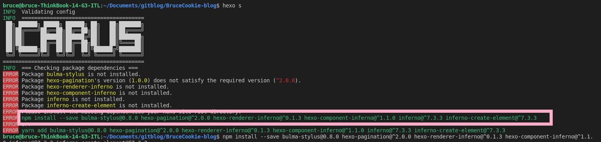

[toc]
1 Start to blog
If we have build environment for bloging successfully,we can start to work by following steps for everytime reboot the computer: (1)Get into the local blog directory. (2)deploy the github:
hexo d
(3)we can preview the websit on local pages
hexo s
2 Writing
2.1 new article
hexo new "My New Post" #Create a new post
hexo new draft "My New draft" #Create a new draft
hexo publish "the draft name" #publish the draft
3 server
3.1 Run server
hexo server #we can get a local webpage
hexo server --draft #we can see how the draft pages look on my website
hexo server -s #In static mode, only files in the public folder will be served and file watching is disabled. You have to run hexo generate before starting the server. Usually used in production.
hexo server -p 5000 #if you’re encountering EADDRINUSE errors, use the -p option to set a different port.
3.2 updata the network pages:
hexo g #generating static files from local source files
hexo d #deploy github updata.
3.3 backup the source folders
3.3.1 backup ghost repository
#edit the files named "_config.yml", deleted the lines of "node_modules","db.json"
it init #init the folder as a local repository.
git add . #add all the files to git
git commit -m "[some message]"
# new repository on website, copy the SSH-key of repository.
git remote add origin [paste the SSH-key] #name the remote repository as origin.
git push -u origin master #push the local repository to network.
3.3.2 restore repository
NOTE:before you restore the repository, you can backup the files havent push to ghost repository yet.
git reset --hard
git pull
git clean -xfd
if it shows "ERROR Deployer not found: git", you can install the deployer
npm install hexo-deployer-git --save
4 pages
hexo new page "My New page" #Create a new page
then we can edit the file named "_config.yml".
5 themes
5.1 change the themes to icarus(Cyberpunk)
git clone https://github.com/ppoffice/hexo-theme-icarus.git themes/icarus
hexo config theme icarus
hexo g
hexo s
if encountering following error, you can run the command like this: github: 
edit the file "_config.icarus.yml" with
variant: cyberpunk"
to change the theme of highlighted code blocks. enter the website https://github.com/highlightjs/highlight.js/tree/main/src/styles, copy the file name you expected, excluding the .css extension, paste it in the file "_config.icarus.yml". forexample, I choosed the "agate"
# Article related configurations
article:
# Code highlight settings
highlight:
# Code highlight themes
# https://github.com/highlightjs/highlight.js/tree/master/src/styles
theme: agate
websites about Hexo:
Hexo: https://hexo.io/
documentation: https://hexo.io/docs/
troubleshooting: https://hexo.io/docs/troubleshooting.html
GitHub & Hexo: https://github.com/hexojs/hexo/issues